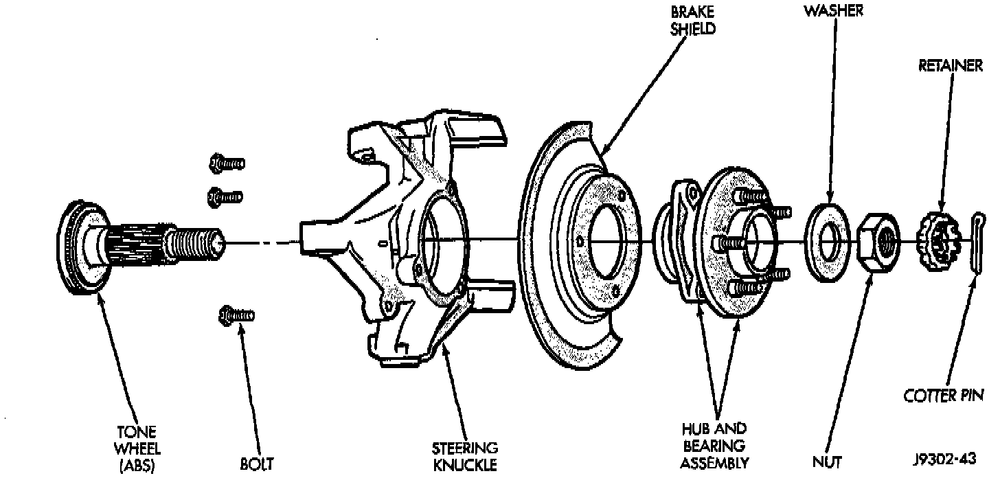

Front Axle
REMOVAL1. Raise and support the vehicle.
2. Remove the wheel and tire assembly
3. Remove the brake components from the axle.
Hub, Knuckle And Axle Shaft:

4. Remove the cotter pin, nut retainer and axle hub nut.
5. Remove the hub to knuckle bolts. Remove the hub from the steering knuckle and axle shaft.
6. Remove the disc brake rotor shield from the bearing carrier.
7. Remove the axle shaft from the housing. Avoid damaging the axle shaft oil seals in the differential.
INSTALLATION
1. Thoroughly clean the axle shaft and apply a thin film of MOPAR wheel Bearing Grease to the shaft splines, seal contact surface, hub bore.
2. Install the axle shaft into the housing and differential side gears. Avoid damaging the axle shaft oil seals in the differential.
3. Install the hub bearing and brake dust shield to the knuckle.
4. Install the hub to knuckle bolts and tighten to 102 Nm (75 ft. lbs.) torque.
5. Install the hub washer and nut. Tighten the hub nut to 237 Nm (175 ft. lbs.) torque. Install the nut retainer and a new cotter pin.
6. Install the brake components.
7. Install the wheel and tire assembly.
8. Lower the vehicle.